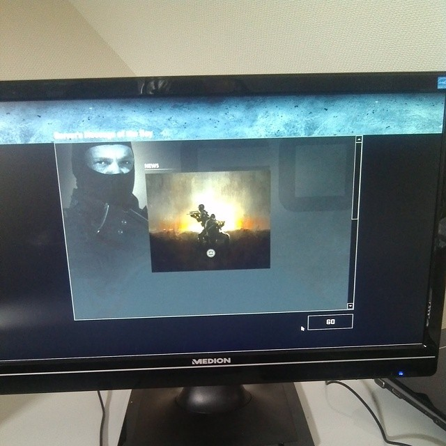

Development and Release
Counter-Strike: Global Offensive is the sequel to the popular first-person shooter Counter-Strike: Source, developed by Valve. Global Offensive's development began when Hidden Path Entertainment attempted to port Counter-Strike: Source onto video game consoles. During its development, Valve saw the opportunity to turn the port into a full game and expand on the predecessor's gameplay. Global Offensive began development in March 2010, and was revealed to the public on August 12, 2011. The closed beta started on November 30, 2011, and was initially restricted to around ten thousand people who received a key at events intended to showcase Global Offensive. After issues with client and server stability were addressed, the beta was opened up to progressively more people, and at E3 2012, Valve announced that Global Offensive would be released on August 21, 2012, with the open beta starting roughly a month before that. Before the public beta, Valve invited professional Counter-Strike players to play-test the game and give feedback.
There were plans for cross-platform multiplayer play between Windows, OS X, Linux, Xbox 360, and PlayStation 3 players, but this was ultimately dropped so that the PC and Mac versions could be actively updated. On August 21, 2012, the game was publicly released on all platforms except Linux, which would not be released until September 23, 2014.
